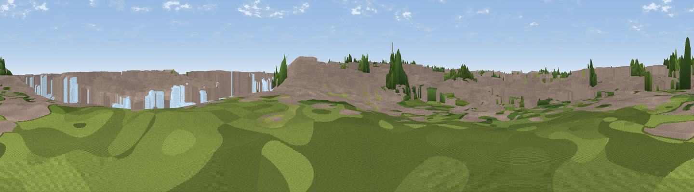

Williamson’s Lookout
#46293 in England · top 100% of its area beats it · near Gorleston-on-SeaWhere it is
The exact computed spot (TG 52644 05239). Click the marker for map links.
The view, rendered

A 360° render of this exact spot computed from the terrain model, tree cover and land cover — summer colours, afternoon light, calibrated against photographs of famous viewpoints. Real trees, hedges and buildings will differ in detail.
The panorama
Grey silhouette: terrain skyline in each direction (720 bearings, Earth curvature and refraction included). Dashed green: skyline with trees (+15 m) and buildings (+8 m) as obstacles. Blue strip: how far the ground is visible on each bearing.
Where the view opens
Wedge length = distance to the farthest visible ground on that bearing (vegetation-aware). Rings at 10, 25 and 50 km.
What fills the view
65% built-up · 29% water · 4% grassland · 2% woodland
Angular shares of the visible panorama (visual magnitude), not map area. Landscape diversity 0.36 (0–1 Shannon).
Key numbers
More beautiful places nearby
The staircase of upgrades: each row has a higher view potential than everything closer. Driving times are estimates from straight-line distance, calibrated against real road routing — check an actual route before setting out.
| Place | Direction | Drive | Score |
|---|---|---|---|
| Oasis Tower | NNE · 2 km | ~5 min | 13.9 |
| Viewpoint near Great Yarmouth | NNE · 3 km | ~8 min | 33.4 |
| Telescope | S · 29 km | ~46 min | 35.0 |
| Gun Hill | S · 29 km | ~46 min | 46.7 |
| Viewpoint near Paston | NNW · 36 km | ~55 min | 56.1 |
| Viewpoint near Mundesley | NNW · 37 km | ~56 min | 58.9 |
| Viewpoint near Trimingham | NNW · 41 km | ~60 min | 62.4 |
| Viewpoint near Sidestrand | NW · 44 km | ~64 min | 65.3 |
52.58620, 1.72819 · source: osm viewpoint · position refined by local search. Computed location — check access rights before visiting.